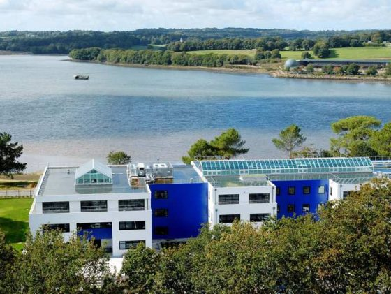
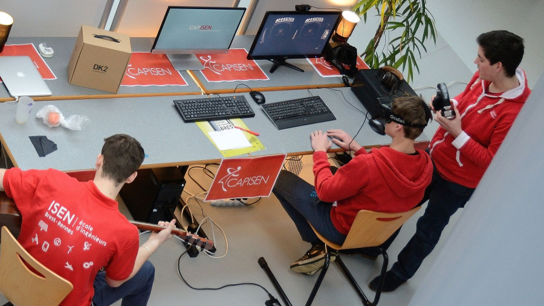
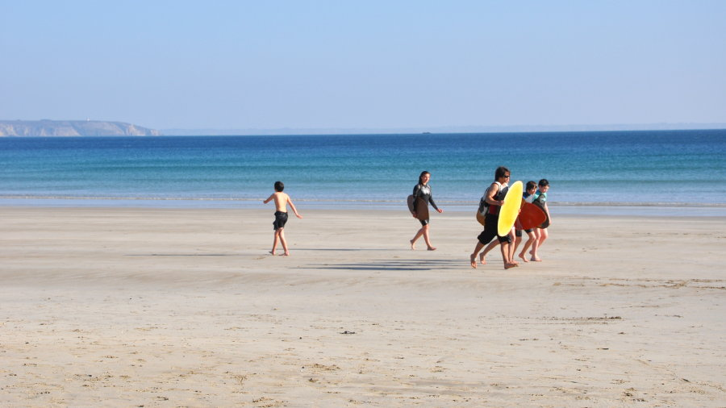

{kind=link}

L'économie du Finistère
Une économie diversifiée et dynamique, de belles opportunités à saisir !
Vous rêvez de changer de vie ?
Sortez du cadre, choisissez le Finistère !
Vous avez choisi le Finistère ! C’est un choix qui vous permettra de profiter d’une vie personnelle et familiale épanouie.
Le territoire le plus occidental de la France est un condensé de Bretagne : paysages magnifiques, diversifiés et préservés, relations humaines authentiques, vie culturelle et associative très animée. C’est un territoire riche de sa culture et ouvert sur le monde.
Votre projet
en 1 clicNotre conseil
nos services
Solidarité, respect, entraide sont des valeurs fortes en Finistère qui joue collectif. Cela se ressent à tous niveaux de la société : collaborations entre les acteurs économiques, importance du secteur de l’ESS (Economie Sociale et Solidaire), tissu associatif dense (environ 18 000 associations en 2018 / 175 000 bénévoles)..
La famille reste un socle solide : l’éducation est priorisée, avec des résultats probants (meilleurs résultats nationaux au baccalauréat), la solidarité intergénérationnelle œuvre à plein, le taux de divorce est parmi le plus bas de France.

Esplanade au château - ©Yvon Jezequel / Brest métropole
 |
|  |
| Etudiants Isen – ©Pierrick Ségalen / Brest métropole |
Avec plus de 900 000 habitants et 1 métropole, Brest, le Finistère bénéficie de tous les services métropolitains : un CHRU avec des équipes médicales performantes et des domaines de recherche spécialisés,1 université (UBO), 8 grandes écoles (d’ingénieurs : Ecole Navale, ENIB, ENSTA, ESIAB, IMT Atlantique, ISEN ; de commerce : Brest Business School ; d’art : EESAB), des organismes stratégiques (en particulier dans le domaine des Sciences et Techniques de la Mer), des services publics bien représentés… Côté commerces, l’offre est complète, recouvrant des enseignes comme Ikea, Leroy Merlin, comme de nombreuses propositions de circuits courts.
Le Finistère a la chance de bénéficier d’une métropole à dimension humaine, Brest, et d’un réseau de villes moyennes dynamiques (Quimper, Concarneau, Douarnenez, Landerneau, Morlaix...). Les circulations sont fluides, les infrastructures performantes, les coûts de l’immobilier et de la vie raisonnables (ex : le prix de vente médian d’une maison ancienne est de 144 000 € en Finistère).

Morlaix
 |
| Quais de Quimper |
|  |
| Jeunes bodyboarders à Camaret-sur-Mer |
Avec 1391 km de côtes, le Finistère est le 1er département littoral métropolitain. La mer est une source renouvelée d’activités : promenades, sports nautiques, pêche, photographie, peinture, dégustation de poissons et fruits de mer... Quelque soit la saison, la mer saura vous apporter un bien-être.
Et la campagne n’est jamais loin. Le centre Finistère notamment vous donnera à voir des paysages étonnants et mystérieux.

Molène
Le Finistère est terre de culture : de festivals (Les Vieilles Charrues, le Bout du Monde, Le Festival de Cornouaille, Astropolis, Panoramas…), de théâtre (Le Quartz est la 1ère scène nationale), de cinéma (Le Groupe Ouest coache des scénaristes du monde entier)… L’offre est dopée par la vie associative.
Le Finistère est une terre de peintres et recense des espaces divers : Musée des Beaux Arts de Quimper, de Brest, Fonds Leclerc pour la Culture, Musée de Pont-Aven.
Le choix dans le domaine sportif est également multiple et financièrement très accessible.
Le finistérien est un amateur de lecture et profite d’une vaste offre de médiathèques, d’éditions régionales, de librairies et d’animations dans le domaine.
Promenade au canal - ©Martin Viezzer / Brest Métropole

Médiathèque, Quimper
| Salle de concert - ©Franck Betermin - Brest Métropole |
Crédits photo : Investir en Finistère

Investir en Finistère
46, quai de la Douane
CS 63825
29238 Brest cedex 2
04°28'57.6" O - 48°22'59.6" N